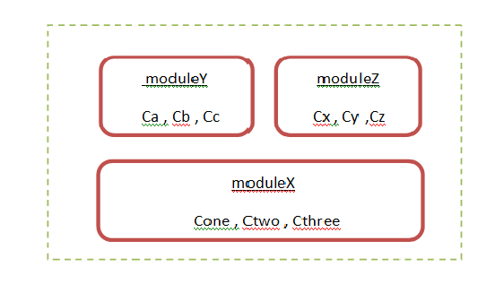

Spring framework
Spring is a framework , Spring is more flexible software when compared with frameworks like struts1 By using struts1 and 2 we can develop only web based applications by using spring frameworks we can develop both standalone applications and web based applications
What is the meaning of IOC ?
A person X is suppose to perform the task instead of that person perform the task perform Y has carried out the task the result of the task is enjoyed by person X ,we call is as IOC
Spring support AOP(Aspect oriented programming)
The advantage of AOP is all common code is available in aspect before the business logic is executed spring call aspect , aspect internally call business logic methods
The entire spring framework divided into couple of modules the advantage of this we can include only required modules in our project
A module is collection of classes , interfaces and enumarasions
We have developed 3 modules moduleX , moduleY and moduleZ . every module is having some classes and interfaces
